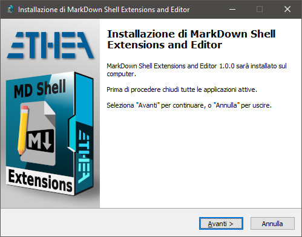
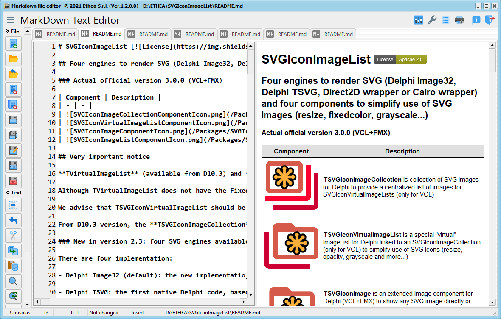
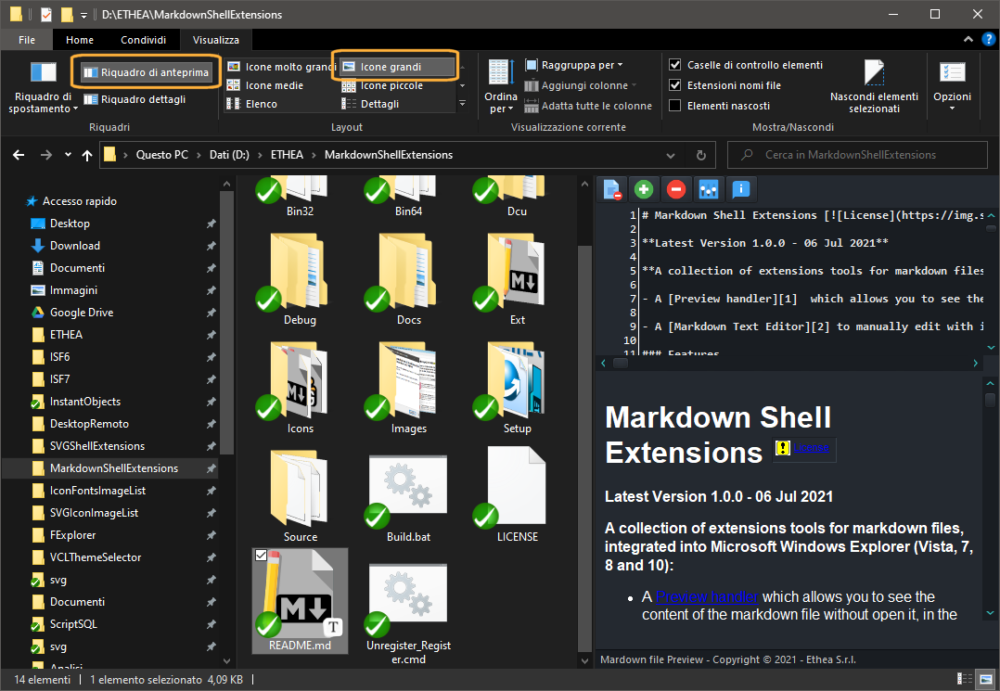

Markdown Editor and Shell Extensions


Related links: embarcadero.com - learndelphi.org
A collection of tools for markdown files, to edit and view content:
-
A Markdown Text Editor to manually edit a markdown file, with instant preview of the output: the preview uses Microsoft Edge WebView2, so math formulas and mermaid diagrams are drawn as on GitHub.
-
A Preview handler which allows you to see the content of the markdown file without open it, in the “Preview Panel”, integrated into Windows Explorer.
Documentation
Follow the Project Site to know all the markdown tools and the Delphi components: Markdown Processor, Markdown Text Editor and Markdown Help Viewer.
Features
-
No need to built the project with Delphi: an easy Setup is provided.
-
Supports Windows 10 and 11 (for 32 bits and 64 bits).
-
Themes (Dark and Light) according to user preferences of Windows Theme
-
Uses the latest, empowered version of the Markdown Processor (2.0): CommonMark 0.31.2 and GitHub Flavored Markdown compliant engine. The default dialect is now GitHub (GFM + math formulas, alerts and mermaid diagrams, plus subscript, superscript, insert, mark, smart typography, heading ids and wiki links); CommonMark, GFM, DaringFireball and TxtMark are still available.
-
The preview of the Markdown Text Editor uses Microsoft Edge WebView2 (TEdgeMarkdownViewer of the Markdown Help Viewer project): math formulas with KaTeX, mermaid diagrams, GitHub alerts, synchronized scroll with the editor. When WebView2 is not available, or it is disabled in the Settings (“Use WebView2 (Edge) when available”), the preview uses HTMLViewer. WebView2Loader.dll is distributed with the editor (installed by the Setup). KaTeX and mermaid.js are installed with the editor too (Scripts folder): math formulas, mermaid diagrams and charts (pie, bar and line charts) are drawn also without an Internet connection.
-
The Preview Panel of Windows Explorer keeps the internal HTML viewer (HTMLViewer): math formulas are shown as images and mermaid diagrams as text.
-
Integrated also with other Shell Applications (like XYplorer)
Delphi: integration with MarkDown Help Viewer
- For Delphi developers: use this tool to prepare and integrate a Help System in your application, using the “MarkDown Help Viewer” project.
- Use the Markdown Text Editor to edit your help files and use the Markdown Help Viewer to show them.
Setup using the Installer
Click to download the MDShellExtensionsSetup.exe located also in the Release area. The Installer works both for 32 and 64 bit system.

For a clean Setup close all the windows explorer instances which have the preview handler active or the preview handler was used (remember the dll remains in memory until the windows explorer was closed).
Markdown Text Editor
A useful Text editor with instant preview of Markdown formatted content:

Manual Build and Installation (only for Delphi developers)
Learn more about the manual within our wiki. Dive deeper into everything related to this tool, its features, and how to make the most of it.
Preview Panel in action
In Windows 10 with Dark theme:

Manual Build and Installation (only for Delphi developers)
If you have Delphi 12 or 13, you can manually build the projects using:
\Source\MDShellExtensionsGroup.groupproj
or the command: Build.bat (defining location of your Delphi environment)
Warning: To simplyfy build of the projects, some third parties libraries are located into ext folder
To manually install the SVGShellExtensions.dll follow these steps:
-
Close all the windows explorer instances which have the preview handler active or the preview handler was used (remember the dll remains in memory until the windows explorer was closed).
-
If you have already used the installer uninstall the components from system.
-
To install manually the dll run the Unregister_Register.cmd (run-as-administrator): notice that you must change the path into cmd file.
Release Notes
08 Oct 2026: ver. 3.0.0 (major version)
- Uses the new Markdown Processor 2.0: CommonMark 0.31.2 and GitHub Flavored Markdown compliant engine, with math formulas, GitHub alerts, mermaid diagrams and the legacy extensions (subscript, superscript, insert, mark, smart typography, heading ids, wiki links)
- New default dialect: GitHub. The dialect saved by the previous versions as CommonMark (the old default) is automatically converted to GitHub; the dialect is now stored by name in the settings, and the dialect combo lists all the dialects (DaringFireball, CommonMark, TxtMark, GFM, GitHub)
- Markdown Text Editor: the preview uses Microsoft Edge WebView2 (math formulas with KaTeX, mermaid diagrams, alerts, synchronized scroll); print preview with the WebView2 print dialog, PDF export with WebView2, HTML export of the full page with the scripts. Fallback to HTMLViewer when WebView2 is not available or when “Use WebView2 (Edge) when available” is disabled in the Settings
- WebView2Loader.dll is distributed with the Markdown Text Editor (installed by the Setup)
- Math formulas and mermaid diagrams (also charts: pie, bar and line charts) are drawn in the preview of the Markdown Text Editor also without an Internet connection: KaTeX 0.16.11 and mermaid 11.17.2 are distributed in the Scripts folder (installed by the Setup)
- Preview Panel of Windows Explorer: still based on HTMLViewer, now with math formulas as images
- New default stylesheet, shared with the Markdown Help Viewer: styles for alerts, mark, kbd, math and mermaid; the font of the page is the HTML font of the Settings
03 Sep 2026: ver. 2.8.5
- Fixed an Access Violation when downloading a new setup right after the automatic version check: the shared HTTP client was created only by the manual check, so the automatic path reached the download with no client at all.
- A missing setup file name or project URL is now reported with a clear message instead of an assertion, which is compiled out of release builds.
- Web help and repository are now kept distinct: the documentation points to https://ethea.it/docs/markdowntools/, while the Issues button and the new-version check point to GitHub.
- Markdown Text Editor: fixed two memory-management defects on the file-opening error path.
- Markdown Text Editor: closing with unsaved changes can now be cancelled.
- Markdown Text Editor: “Save All” no longer stops at the first file that cannot be saved; all the failures are reported together at the end.
- Markdown Text Editor: removed the Help button from the error dialog, which did nothing because no help file is configured.
01 Sep 2026: ver. 2.8.4
- Fixed memory and GDI resource leak in the Thumbnail provider: the bitmap was never released, leaking resources in the Explorer process for every generated thumbnail.
- Fixed the shared resources data module of the shell extension: with two preview handlers alive in the same process, one could free the resources still in use by the other.
- Fixed preview sizing on high-DPI and multi-monitor setups: the preview now uses the rectangle provided by the host (as required by the IPreviewHandler contract) instead of GetWindowRect, and re-layouts when the DPI changes.
- Fixed preview of ANSI-encoded markdown files (empty preview); exceptions are no longer silently discarded.
- Removed Application.ProcessMessages during image loading inside the DLL (it pumped the Explorer message queue) and added reentrancy guards.
- Fixed the PDF page orientation setting, written and read with different INI keys.
- Fixed the version check: MDTextEditor declared a wrong version in the binary VERSIONINFO and proposed an update to an already installed version; the check now runs in background at startup and can be disabled.
- Remote images: no temporary files left behind.
- Code cleanup: removed unused units, classes and methods, and reduced the size of the thumbnail log.
06 Jul 2026: ver. 2.8.3
- Added a configurable HTML stylesheet (CSS) in Settings (Preview page), with CSS syntax highlighting: you can customize how the markdown preview is rendered.
- Large images now fit the page width by default (img max-width).
- Reorganized the Settings dialog: editor options in the “General” page, HTML preview options in the “Preview” page.
- The Settings dialog can now be closed with the Esc key.
- Fixed “List index out of bounds” at startup when restoring the previous session.
26 Jun 2026: ver. 2.8.2
- Fixed random Access Violation when closing a document tab.
- Fixed Access/External Violation when zooming the HTML preview with Ctrl+Mouse wheel (including the code-block syntax highlighter).
- Fixed oversized editor font when zooming with Ctrl+Mouse wheel on high-DPI monitors.
17 Jun 2026: ver. 2.8.1
- Fixed tables: inline constructs no longer span cells
- Updated Markdown Support Test.md file
- Added Allow Unsafe HTML CheckBox into Settings
09 Jun 2026: ver. 2.8.0
- Added syntax highlighting of fenced code blocks (
delphi, json, …), based on the language, like GitHub, both in the Editor preview and in the Explorer Preview Panel.
- Added Markdown syntax highlighting in the text editor (headings, bold, italic, links, inline code, lists, blockquotes, …), with theme-aware colors for light and dark mode.
- Added Settings option “Highlight Markdown text” (enabled by default) to turn the editor's Markdown syntax highlighting on or off.
03 Jun 2026: ver. 2.7.3
- Added single-instance behavior: opening a markdown file now reuses the running editor instead of starting a new one.
- Added Settings option to remember and reopen files from the last session.
27 May 2026: ver. 2.7.2
- Fixed copy (Ctrl-C and context menu) from HTML Viewer.
- Added synchronized scrolling between the Markdown editor and the HTML preview
- Added synchronized scrolling as toggleable toolbar button and Settings
11 Apr 2026: ver. 2.7.1
- Used new “modern” Styles available in Delphi 13.
20 Feb 2026: ver. 2.7.0
- Fixed saving new file in UTF-8 format.
02 Jan 2026: ver. 2.6.0
- Fixed Hyperlinks in PDF Export: now are visible and active in PDF file generated, using SynPDF library.
- Fixed random AV closing files.
06 Sep 2025: ver. 2.5.0
- Built with Delphi 13
- Refactoring PageControl to speedup loading
- Added check for new version available, download and install
- Updated Setup
- Updated the latest Image32 library
01 Mar 2025: ver. 2.4.0
- Added “Wordwrap option” for the editor (active by default)
- Added “Layout Views”
- Fixed Menu over Editor Toolbar and Captions when collapsed
- Updated the latest Image32 library
26 Jan 2025: ver. 2.3.3
- Fixed loading remote svg files
- Fixed “autocreate” missing file
22 Jan 2025: ver. 2.3.2
- Added auto-create file linked, if not exists
- Fixed Splitter View Opening a File
- Fixed Refresh content after load
15 Sep 2024: ver. 2.3.1
28 Aug 2024: ver. 2.3.0
- Use of TFormTabsBar component (Delphi 12) for paging
- Use of Styled Message Dialogs
- Updated Setup to show errors registering dlls
28 May 2024: ver. 2.2.5
- File Changed notification and reload only when App has focus
- Small icons on Message Dialogs
23 May 2024: ver. 2.2.4
- Fixed Registration of dll extension during Setup
- Updated the latest Image32 library
21 May 2024: ver. 2.2.3
- Added Packages in External Sources
- Changed MessageDialogs with small animations
- Fixed Version number into Installer
10 May 2024: ver. 2.2.2
- Fixed Explorer Preview for Chinese chars
- Added use of StyledComponents and Rounded Buttons in Explorer Preview
- Fixed Initialization of GDI+
09 May 2024: ver. 2.2.1
- Added File Changed notification and reload
- Fixed Preview for Chinese chars
- Added use of StyledComponents and Rounded Buttons
- Built with Delphi 12.1
- Built with Latest Image32 Library
- Built with Latest Skia4Delphi 6.1 Library
20 Mar 2024: ver. 2.2.0
- Fixed resize content when changing Monitor
- Updated to latest version of HTMLViewer
13 Jan 2024: ver. 2.1.0
- Built with Delphi 12
- Updated Copyright
- Aligned to MarkDown HelpViewer project
- Added create table wizard
3 Nov 2023: ver. 2.0.2
- Added “mark” command in markdown toolbar
- Recognized 1) same as 1. (ordered list)
- Added .text and .txt extensions to editor/shell extensions
25 Oct 2023: ver. 2.0.1
- Fixed some “hints”
- Uses System Border and Shadows for Forms
24 Oct 2023: ver. 2.0.0
- Added use of Skia4Delphi
- Added support for new image format (webp and wbmp)
- Uses AnimatedStyledDialogs for messages
- Added toolbar for markdown commands
- Added dialog for input of hyperlink for Images and Files
- Updated Markdown library with best support for CommonMark transformation
- Subscript text and Superscript text
- Formulas (using Google Chart API)
- Markers
- Reference-style Links
29 Jun 2023: ver. 1.5.2
- Fixed loading images with “spaces” in the filename
- Fixed immediate-loading of new images when editing the file
- During loading of remote images, user can stop loading pressing “Esc”
- Updated Copyright for the Editor
26 Jun 2023: ver. 1.5.1
- Fixed Preview of Markdown files with extensions different from .markdown
24 Jun 2023: ver. 1.5.0
- Autoload local markdown files when clicked into Preview
- The editor can open all markdown extensions: .md, .mkd, .mdwn, .mdown, .mdtxt, .mdtext, .markdown, .txt, .text'
- Stopped image rendering during editing to speed-up
- Added useful close button on Tabs
- Hint full filename on Tabs
- Save/Discard messaged default response inverted
- Removed Settings “Search In Folder”
1 Nov 2022: ver. 1.4.3
- Fixed loading images into Preview
- Fixed the setting for local loading
11 Set 2022: ver. 1.4.1
- Added Combobox for easy selection Markdown Dialect
- Added Windows 11 light and dark styles
- Fixed load file with blanks in content menu
- Fixed loading ANSI files
- Fixed AV in Settings with opened files
20 Jan 2022: ver. 1.3.0
- Added Support for Windows 11
- Fixed resize content
04 Sep 2021: ver. 1.2.0
- Added Support for Delphi 11
- Updated Image32 Lib
20 Jul 2021: ver. 1.1.0
- Added Image32 Lib to best rendering of SVG Images
06 Jul 2021
- First public release with setup
Credits
Many thanks to Rodrigo Ruz V. (author of theroadtodelphi.com Blog) for his wonderful work on delphi-preview-handler from which this project has used a lot of code and inspiration.
License
Licensed under the Apache License, Version 2.0 (the “License”);
Unless required by applicable law or agreed to in writing, software distributed under the License is distributed on an “AS IS” BASIS, WITHOUT WARRANTIES OR CONDITIONS OF ANY KIND, either express or implied. See the License for the specific language governing permissions and limitations under the License.
Other libraries from Ethea:
SVGIconImageList - https://github.com/EtheaDev/SVGIconImageList/
StyledComponents - https://github.com/EtheaDev/StyledComponents
Delphi MarkdownProcessor - https://github.com/EtheaDev/MarkdownProcessor
Third parties libraries:
OpenSLL Library: Cryptography and SSL/TLS Toolkit
Copyright © 1998-2018 The OpenSSL Project. All rights reserved.
Delphi Markdown - https://github.com/grahamegrieve/delphi-markdown
Copyright (c) 2011+, Health Intersections Pty Ltd All rights reserved
Delphi Preview Handler - https://github.com/RRUZ/delphi-preview-handler
The Initial Developer of the Original Code is Rodrigo Ruz V.
Portions created by Rodrigo Ruz V. are Copyright © 2011-2023 Rodrigo Ruz V.
SynEdit - http://synedit.svn.sourceforge.net/viewvc/synedit/
all rights reserved.
KaTeX - https://katex.org/
Copyright (c) 2013-2020 Khan Academy and other contributors (MIT License)
Mermaid - https://mermaid.js.org/
Copyright (c) 2014-2022 Knut Sveidqvist (MIT License)
Synopse/SynPDF - https://github.com/synopse/SynPDF
Copyright © Synopse: all right reserved.
HtmlToPdf - https://github.com/MuzioValerio/HtmlToPdf
Copyright © Muzio Valerio.
Image32 Library - http://www.angusj.com/delphi/image32/Docs/_Body.htm
Copyright ©2019-2025 Angus Johnson.
dzlib - https://sourceforge.net/projects/dzlib/
Copyright (c) Thomas Mueller
HTMLViewer - https://github.com/BerndGabriel/HtmlViewer
Copyright (c) 1995 - 2008 by L. David Baldwin
Copyright (c) 1995 - 2023 by Anders Melander (DitherUnit.pas)
Copyright (c) 1995 - 2023 by Ron Collins (HtmlGif1.pas)
Copyright (c) 2008 - 2009 by Sebastian Zierer (Delphi 2009 Port)
Copyright (c) 2008 - 2010 by Arvid Winkelsdorf (Fixes)
Copyright (c) 2009 - 2023 by HtmlViewer Team
External projects
To simpilfy compilation of projects they are added into ext folder
SVGIconImageList
HtmlViewer
vcl-styles-utils
markdownProcessor
StyledComponents
dzlib